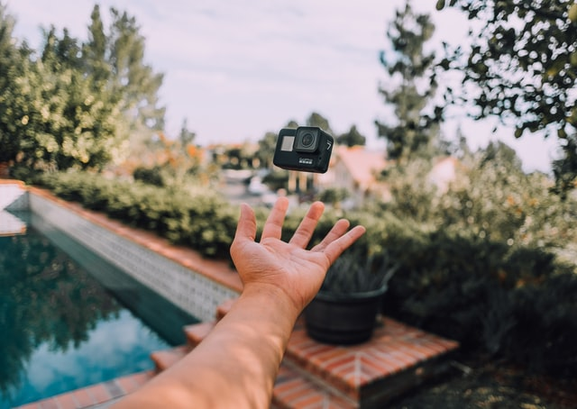
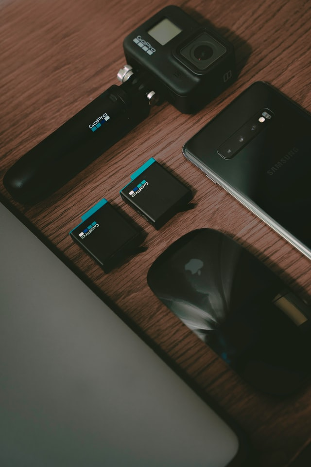

BLOG
HOME
ABOUT
POSTS
GoPro HERO8
Insanely smooth video.
This is HERO8 Black—the most versatile, unshakable HERO camera ever. A streamlined design makes it more pocketable than ever, and swapping mounts takes just seconds, thanks to built-in folding fingers. And with the optional Media Mod, you get ultimate expandability to add more lighting, pro audio and even another screen. There’s also game-changing HyperSmooth 2.0 stabilization with jaw-dropping slo-mo.
Design and screen

Despite the Hero 8 Black not looking too different to the Hero7 Black, meaningful enhancements set it apart from its predecessor.
On the front is a familiar monochrome display, but alongside it is a fixed lens with no removable glass protector. Instead, the lens is shielded by scratch and smash resistant glass that’s 2x more durable than that of the Hero7. Naturally, this means third party ND filter options won’t be quite as convenient - no simple screwing on, but GoPro claims the move to a fixed lens means the microphone below it can capture better audio - and the mic is indeed, better.
Video
Footage shot on the GoPro Hero8 Black can be captured across multiple resolutions starting at 1080p 240fps through to 4K 60fps. It shoots at either 4:3 or 16:9, and betters the competition by being able to capture Hypersmooth 2.0 stabilized footage across all resolutions.
Give the Hero8 Black good light and it captures stunning content that’s held together incredibly steadily. There’s a new Boost feature for situations when stability is more important than clarity. Alternatively, you can shoot with Hyperboost 2.0 on high, standard or off - we tended to stick with high and it worked to great effect.
The Hero8 Black also adds an additional artificial lens, or focal length, to the mix. In addition to SuperView, Wide and Linear, which we saw on the Hero7 Black, there’s a new Narrow option, which shoots at a similar angle of view to a smartphone - 27mm. This is capped at 1080p, but is still a great feature as it grabs footage with no noticeable distortion.
Photos
While we wouldn’t use our GoPro for photos if we’ve got a flagship phone with an ultra-wide lens, like the iPhone 11 Pro or Samsung Galaxy S10 5G in anything but great lighting, the Hero8’s improved SuperPhoto feature captures better dynamic range and more pop than most action cam snaps and the night photography betters night video significantly.
There’s also traditional HDR and RAW photo support too, and if you fancy diving into the manual settings, you can set the shutter to stay open for up to 30 seconds, and drive the ISO up to 3200.
Battery life and connections

While the GoPro Hero8 Black’s battery has the same capacity and physical size as the Hero7, it’s power management is slightly different. This means, while there’s backwards compatibility across the range, you’ll get an on-screen alert if you use an older one, warning you that some features will be disabled.
As for battery life, it lasts for roughly 50 minutes on a single charge, so just like the GoPro Max, the Hero8 Black is good for a day out sporadically shooting two-minute clips here and there. If, however, you’re looking to continuously shoot for hours on end, then you’ll want to pack a spare or a power bank. The Hero8 Black’s door detaches, making it convenient to keep it plugged into a power bank for long shoots, provided you don’t need weather-sealing.
Within the app, you can also apply basic edits to your clips and set them against themes and music too, not to mention backup all your photos and videos to GoPro’s paid cloud service, GoPro Plus.
HyperSmooth
Smooth just got smoother. Now HERO8 Black has three levels of stabilization—On, High and Boost— so you can pick the best option for whatever you do. Get the widest views possible, or boost it up to the smoothest video ever offered in a HERO camera. Plus, HyperSmooth works with all resolutions and frame rates, and features in-app horizon leveling
Verdict
The GoPro Hero8 Black isn’t our perfect action camera, but if the screen was a bit bigger, it wouldn’t be far off. As it stands though, it captures stunning video in well-lit environments that’s incredibly stable – and is certainly the best GoPro ever. The high-impact photos it shoots also beats out the competition in all lighting conditions, delivering plenty of punch and pop, and the camera’s smart new mounting feet are a seemingly simple, but innovative time-saver.
GoPro’s secured the Action Camera crown once again with the Hero8 Black, making its top-tier price tag that bit easier to justify.
Copyright © 2020